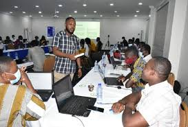
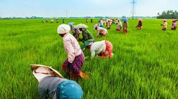

Education and Training
Teachers, lecturers, education consultants, and training facilitators are essential for Ghana's educational system.
Information and Communication Technology (ICT)
Software developers, IT support specialists, data analysts, and digital marketers play a growing role in Ghana's digital economy.
Finance and Banking
Accountants, financial analysts, bank tellers, and auditors are crucial for managing financial services and investments.
Construction and Real Estate
Civil engineers, architects, surveyors, and real estate agents are vital for infrastructure development.
Agriculture and Agribusiness
Farming, fishing, and food processing dominate Ghana's economy, employing a significant portion of the population.
Health and Medicine
Nurses, doctors, pharmacists, medical laboratory scientists, and public health professionals are in demand in the healthcare sector.